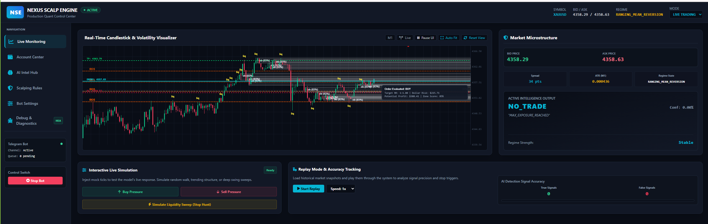

Nexus Scalp Engine
A research-driven, hexagonal, event-driven scalping platform for MetaTrader 5 — causal features, governed deep models, an invariant risk engine, deterministic research tooling and forensic observability in one auditable pipeline.
🧭 Evidence before claims
Metrics without evidence render n/a — never fake zeros. Negative results are published: the flagship 70D research candidate was rejected by our own OOS gate.
🔒 Safety by construction
PAPER default · SHADOW with zero order authority · LIVE behind explicit confirmation · hard risk clamps (HARD_MAX_LOTS, margin ≤20%) enforced in the execution path.
🔬 Deterministic research
Purged + embargoed walk-forward, bit-exact replay, fingerprinted datasets/models, provenance on every run — the same feature contract for live, replay and training.
👁️ Runtime truth
Forensic observability: severity-split logs, incident correlation, deploy gate. Broker truth wins over stale state; gates are authorities, settings are intent.
✦ Why Nexus is different
Vision →Not a claim of alpha — a way of treating claims. Every dataset, model and run is fingerprinted. Candidates never promote themselves.
Causal 50D engine CERTIFIED
Strictly causal features (INV-008) with NaN/Inf fallbacks. Same contract for live, replay and training — protected by schema hash.
ScalpNet + Model Factory
Dual-path TCN + self-attention. Artifact-first governance: manifests, inference needs no DB, operator-gated promotion only.
Invariant risk engine
Kelly sizing · margin ≤20% · HARD_MAX_LOTS=10 · circuit breaker. Hard clamps live in the execution path, not in a comment.
Safety by construction
PAPER is default. SHADOW has zero order authority. LIVE needs explicit confirmation. Research workers never hold order authority (INV-002).
Deterministic research loop CERTIFIED
Purged + embargoed walk-forward · bit-exact replay · fingerprinted runs · provenance on every artifact · hard OOS gate (OOS failure ⇒ REJECTED — proven on 70D).
▦ Operating modes
First run →🟢 PAPER
Default. Fully simulated — market data + orders. For first run, dev, UI work.
👁 SHADOW
Live feed, zero authority. Evaluate signals & gates on real data with no orders — the honest test.
🔴 LIVE
Real money. Broker IPC / ZMQ · account-identity fail-safe · explicit confirmation.
⚙️ How Nexus works
Every stage is isolated behind hexagonal ports. Promotion between stages requires an operator decision on reproducible evidence.

🧱 Capability highlights
Full matrix →| Capability | Status |
|---|---|
| Causal 50D feature engine | CERTIFIED |
| Risk engine + execution clamps | CERTIFIED |
| Walk-forward + hard OOS gate | CERTIFIED |
| Artifact-first Model Factory | IMPLEMENTED |
| 70D contract (Base+News+Liquidity) | EXPERIMENTAL |
| Counterfactual engine (NO_TRADE walk) | RESEARCH |
⚡ What's New — v9.0.6
2026-09-01- f71cf01 Hermes-Main: BUG-183 taskboard row re-applied (lost in TASK-STASH-MERGE-03 branch cycle) — purge/embargo defaults wired into production research path
- 966c152 Agent GitHub Manager: TASK-STASH-MERGE-03 - both stashes reconciled (chg32-seam ABSORBED by 6213d23/2388780, policy prob-hunk superseded by CHG-0032-A1 policy deferral); byte-preserved to archive then dropped
- 967a468 Hermes-DevOps: wire BUG-183 purge/embargo leakage-guard regression into the CI critical manifest
- 0eb026c Nexus-Main: taskboard row — BUG-182B deferred-file touch disclosure + launch-gate evidence + CHG-0032 Step-3 binding rules R1/R2/R3
- 3fa3909 Nexus-Main: BUG-182B launch-gate evidence attached + BUG-184 filed (CHECK-FCS-04 non-numeric-element PASS hole, repro-grounded)
- 749054a Agent GitHub Manager: ruff 0.16.5 format conformance for BUG-176 schema-flag test (long runner.invoke line wrapped; 0.16.3 local skew masked it -> CI ruff_format rc=1). Local venv ruff aligned to the pyproject pin 0.16.5.
📚 Explore the documentation
Getting Started
Install, run and configure the engine. PAPER mode is the default; SHADOW gives you live data with zero order authority.
Project
What Nexus is, what is certified vs experimental, where it is going — all evidence-graded.
Architecture
How the engine is built: hexagonal layers, the tick-to-decision path, model governance, and the intelligence loop.
Research
How historical data becomes falsifiable evidence — datasets, backtests, walk-forward, OOS, replay, counterfactuals.
Engineering
Quality gates, CI architecture, the release process, and the security posture.
Guides
Operating the engine day to day: CLI, REST API, troubleshooting, common workflows.
Contributing
The engineering contract, documentation ownership, and how to add a language.
Reference
CLI reference, glossary, terminology, and honest answers in the FAQ.
🗓️ Release timeline
All releases →Ready to evaluate on live data — without risk?
Start in SHADOW. Same features, same gates, same pipeline — zero order authority.